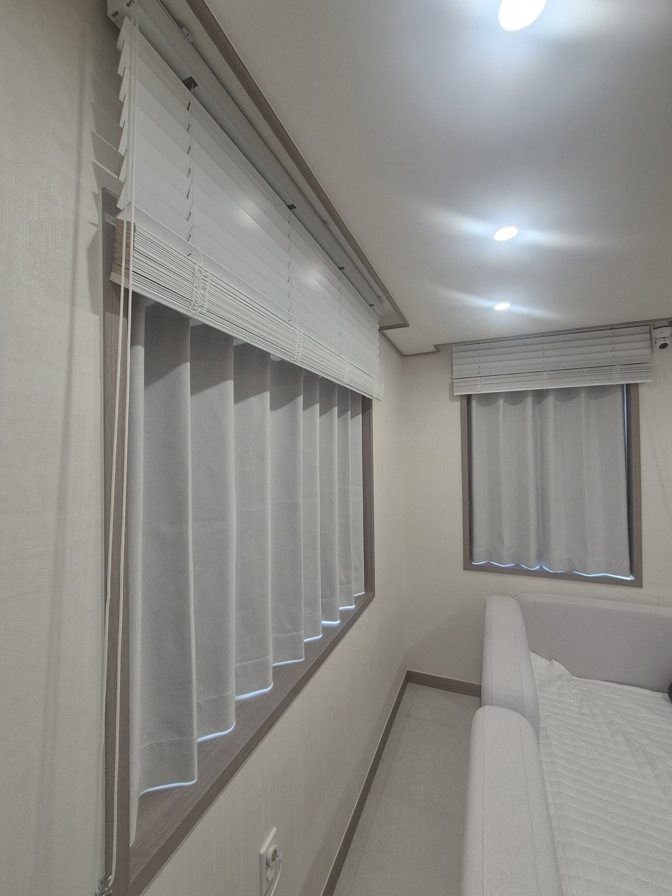
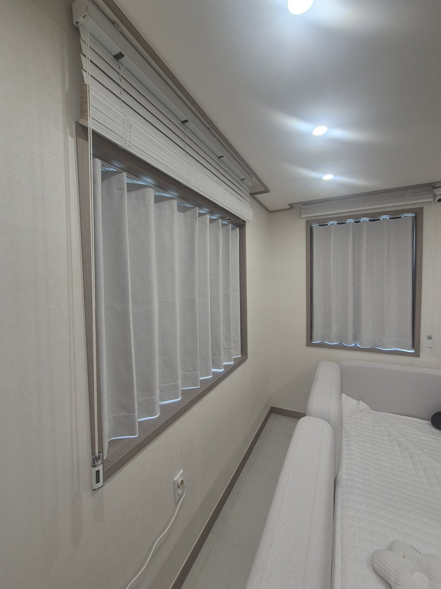
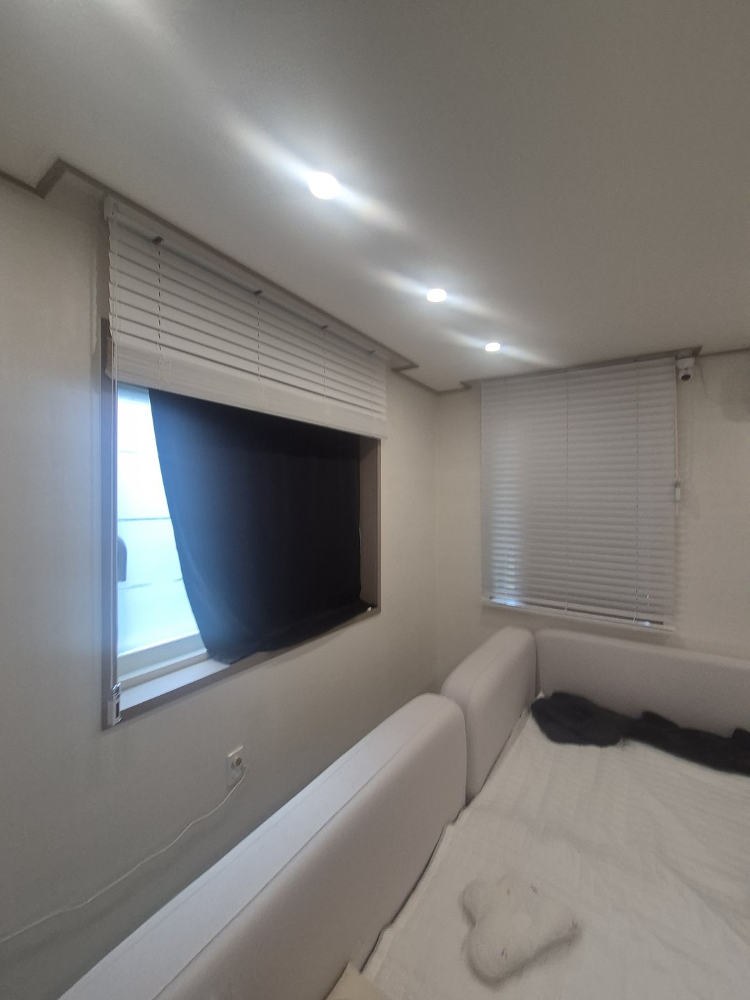
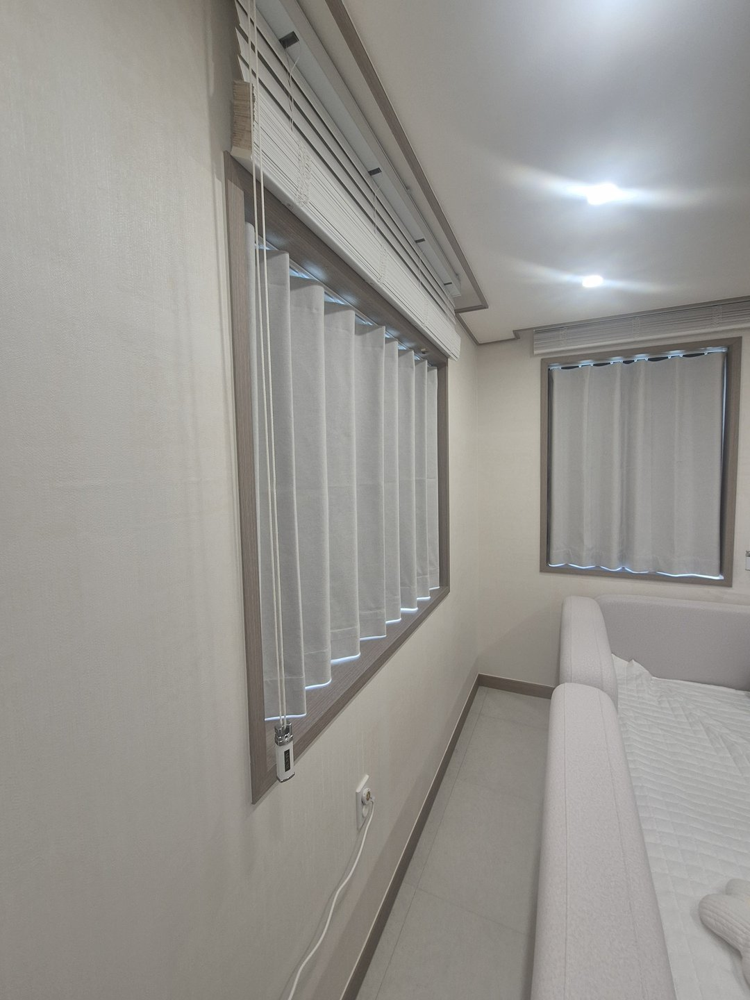
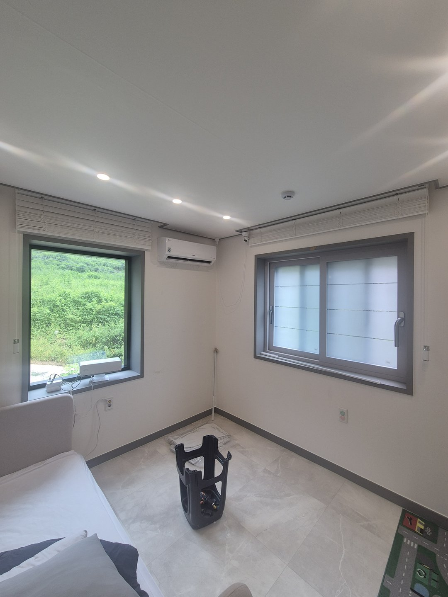
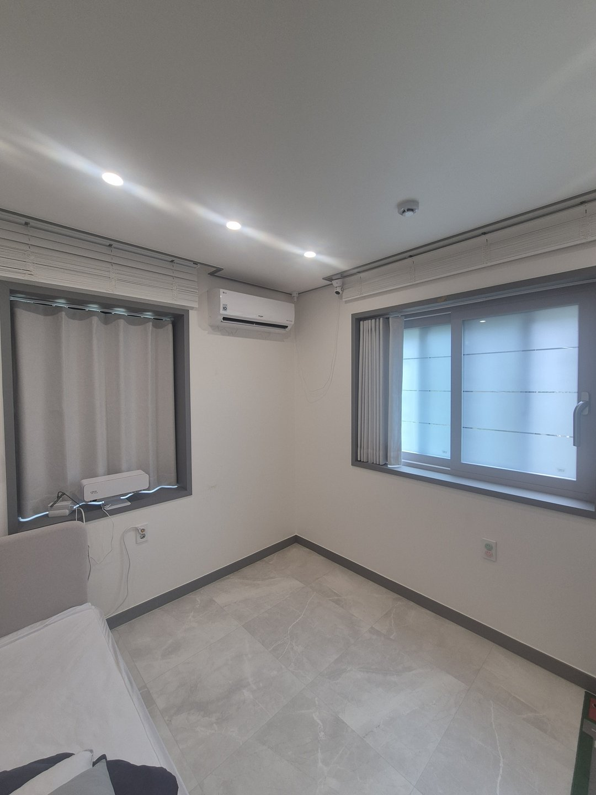
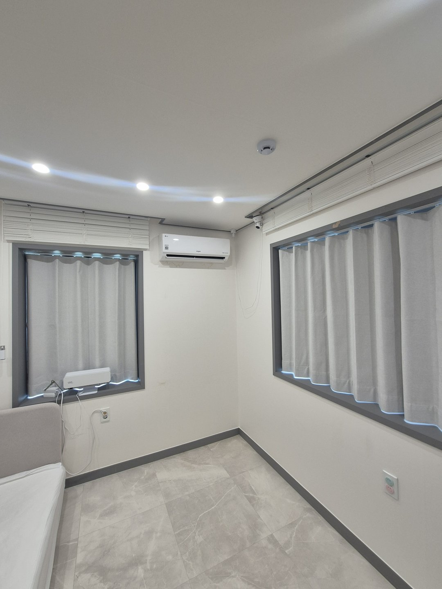
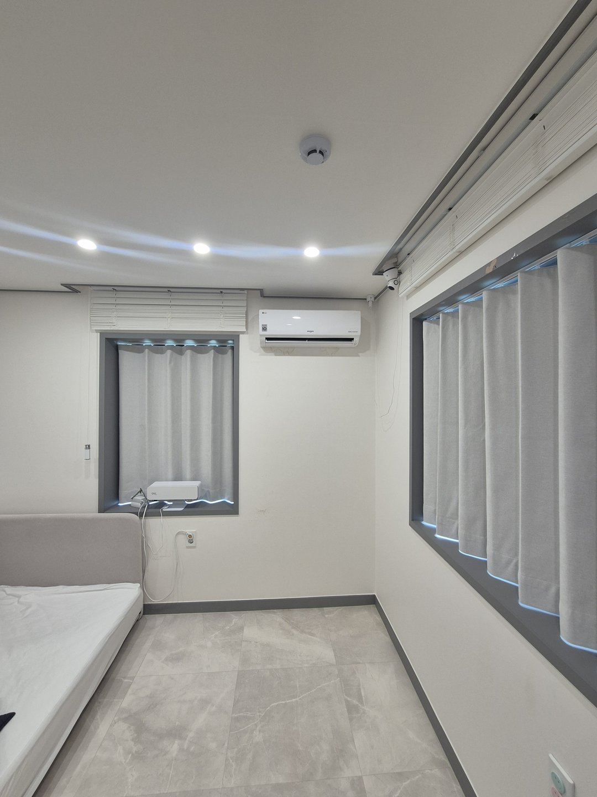

2026년 8월 21일 시공
예천 단독주택
방 두 곳 밝은 회색 암막커튼 시공후기

예천에 있는 단독주택 시공입니다. 방 두 곳에 밝은 회색 암막커튼을 넣었습니다. 한 방은 넓은 가로창과 작은 창이 하나씩 있었고, 다른 방은 창이 두 면에 나 있었습니다.
두 방 모두 창에는 이미 흰색 블라인드가 달려 있었습니다. 그런데도 커튼을 한 겹 더 걸었습니다.
블라인드가 있는데 커튼을 또 다는 게 낭비일까요
블라인드와 커튼은 하는 일이 다릅니다. 블라인드는 슬랫을 눕히고 세워서 빛의 방향을 바꿉니다. 커튼은 원단으로 창을 덮어 빛의 양을 끊습니다.
블라인드는 눈부심을 줄이는 데 아주 좋습니다. 다만 방을 완전히 어둡게 만들지는 못합니다. 슬랫과 슬랫 사이에 미세한 틈이 남고, 줄이 지나가는 구멍으로 점 같은 빛이 들어오고, 창틀과 블라인드 사이 옆면으로 선빛이 남습니다.
평소에는 신경 쓰이지 않는 정도지만, 낮잠을 재우거나 화면을 보는 방에서는 이 빛이 거슬립니다.

기존 블라인드를 떼지 않은 이유
떼도 되지만 남겨두는 쪽이 실제로 더 편합니다.
낮에는 블라인드만 내려서 눈부심만 줄입니다. 밖은 보이고 방은 밝습니다. 자야 할 때나 화면을 볼 때만 커튼을 칩니다.
하나만 있으면 다 닫거나 다 열거나 둘 중 하나입니다. 두 개가 있으면 그 사이에 쓸 수 있는 단계가 하나 더 생깁니다. 그 단계를 만들려고 남겨둔 것입니다.

원래 있던 진한 남색 커튼은 왜 바꿨을까요
시공 전에는 진한 남색 커튼이 걸려 있었습니다. 차광은 잘 됐습니다. 대신 닫으면 방이 확 눌렸습니다.
사장님 말씀이 이랬습니다. "낮에 치면 너무 컴컴해요."
진한 색 원단은 빛을 막는 동시에 빛을 흡수합니다. 밖에서 오는 빛만 막는 게 아니라 실내에 이미 있던 빛까지 같이 먹습니다. 그래서 닫는 순간 방이 동굴처럼 됩니다.

밝은 회색 암막은 어둡게 못 만들지 않나요
제일 많이 받는 오해입니다. 차광은 원단의 앞면 색이 아니라 뒷면 코팅이 합니다.
밝은 회색 암막도 뒤에서 오는 빛은 진한 색과 똑같이 막습니다. 다른 건 실내 조명을 대하는 방식입니다. 진한 색은 흡수하고 밝은 회색은 표면에서 반사시킵니다. 그래서 커튼을 쳐도 방이 눌리지 않습니다.
정리하면 이렇습니다. 차광은 뒷면이 하고, 방의 분위기는 앞면이 정합니다. 이 둘은 따로 고를 수 있습니다. 다만 원단과 현장 조건에 따라 체감은 달라질 수 있습니다.

옆방은 빔프로젝터를 쓰는 방이었습니다
옆방은 창이 두 면에 나 있었습니다. 한쪽은 산이 보이는 큰 창, 다른 쪽은 방범살이 있는 창입니다. 창턱에는 빔프로젝터가 놓여 맞은편 벽에 쏘아서 보는 자리였습니다.
낮에는 화면이 씻겨서 잘 안 보입니다.

빔을 쓰는 방은 기준이 다릅니다
프로젝터는 스크린에 빛을 더하는 장치입니다. 검정을 표현할 때는 아무것도 쏘지 않습니다. 그 자리에 창으로 들어온 빛이 얹히면 검정이 회색으로 떠오릅니다.
반면 흰 부분은 이미 프로젝터가 낼 수 있는 최대라 더 밝아질 여지가 적습니다. 아래는 올라가고 위는 그대로니 대비가 무너집니다.
그래서 더 밝은 프로젝터를 사도 근본적으로 회복되지 않습니다. 들어오는 빛을 끊는 쪽이 빠르고 확실합니다.

창이 두 면에 나 있을 때는 무엇을 맞출까요
창이 마주보지 않고 두 면에 나 있으면 빛이 두 방향에서 들어옵니다. 한쪽만 막으면 나머지 한쪽 빛이 그대로 남아서 막은 의미가 옅어집니다.
그래서 두 창을 같은 원단, 같은 색으로 맞췄습니다. 조작 방식도 통일했습니다. 한 방 안에서 창마다 여닫는 방법이 다르면 결국 손이 덜 가는 쪽만 쓰게 됩니다.

단독주택 창은 아파트와 다릅니다
단독주택은 벽이 두꺼워서 창이 벽 안으로 깊이 들어가 있는 경우가 많습니다. 이 집도 창틀이 깊었습니다.
창틀이 깊으면 그 안에 커튼을 넣고 싶어집니다. 그런데 창틀 안에 넣으면 원단 폭이 창보다 좁아집니다. 그러면 양옆으로 빛줄기가 생깁니다. 암막을 달고도 옆으로 새는 대부분의 원인이 여기 있습니다.
그래서 창틀 안이 아니라 벽면 커튼 박스에 걸었습니다. 원단을 창보다 좌우로 넉넉히 물려서 옆 틈을 덮었습니다.

자주 묻는 질문
Q. 예천도 방문 시공 되나요?
됩니다. 예천, 안동, 영주, 의성, 문경, 상주, 영천, 포항, 경주 일대는 따솜커튼블라인드 이실장(010-2825-7275)이 직접 방문해 실측하고 시공합니다.
Q. 블라인드를 떼고 커튼만 달면 안 되나요?
됩니다. 다만 낮에 살짝만 가리고 싶을 때 쓸 단계가 없어집니다. 블라인드가 이미 있고 상태가 괜찮다면 남겨두시는 쪽을 권합니다.
Q. 암막커튼은 무조건 진한 색이어야 하나요?
아닙니다. 차광은 원단 뒷면 코팅이 하고 방 분위기는 앞면 색이 정합니다. 밝은 색 암막도 뒤에서 오는 빛은 똑같이 막습니다.
Q. 커튼을 쳐도 옆으로 빛이 새는데요?
대부분 원단 폭이 창보다 좁아서 생깁니다. 창틀 안이 아니라 벽면에 걸고 좌우로 넉넉히 물리면 줄어듭니다.
Q. 빔프로젝터 방은 암막이 꼭 필요한가요?
낮에 보실 거라면 필요합니다. 프로젝터는 빛을 더하는 방식이라 외부 빛이 들어오면 검정이 회색으로 떠서 대비가 무너집니다. 더 밝은 기기로 바꾸는 것보다 창을 막는 쪽이 확실합니다.
Q. 아이 방에 커튼을 달아도 괜찮을까요?
조작줄이 아이 손에 닿지 않게 고정 부속을 벽에 답니다. 요청하시면 시공할 때 같이 달아드립니다.
Q. 기존 커튼 박스를 그대로 쓸 수 있나요?
대부분 그대로 씁니다. 레일 길이가 창보다 짧으면 옆으로 빛이 새기 때문에 그때는 레일을 새로 답니다.
Q. 관리는 어떻게 하나요?
먼지는 털어내시면 되고, 세탁이 필요하면 원단에 따라 방법이 달라 시공할 때 안내해 드립니다. 암막 코팅면은 세게 비비지 않는 쪽이 오래 갑니다.
마무리
블라인드와 커튼은 경쟁하는 물건이 아닙니다. 블라인드는 빛의 방향을 맡고 커튼은 빛의 양을 맡습니다. 둘이 같이 있으면 낮과 밤 사이에 쓸 수 있는 단계가 생깁니다.
지금 달린 것을 떼야 하나 고민 중이시라면, 떼기 전에 한 겹 더 거는 쪽도 한 번 보시면 좋겠습니다.
비슷한 시공


비슷한 시공이 필요하신가요?
창 전체가 나오게 찍은 사진 한 장 주시면 방문 전에 견적을 알려드립니다.
이미 블라인드나 커튼이 달려 있다면 그 상태 그대로 찍어주시면 더 정확합니다.